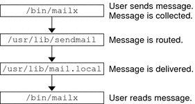

Mail Service Programs and Files
Mail services include many programs and daemons that interact with each other. This section
introduces the files, programs, terms, and concepts that are related to administering electronic mail.
Enhancement for vacation Utility
Starting in the Solaris 10 release, the vacation utility has been enhanced to enable
a user to specify which incoming messages receive autogenerated replies. With this enhancement the user
can avoid sharing confidential or contact information with unknown people. Messages from spammers or unknown
people would not receive a reply.
This enhancement works by matching an incoming sender's email address to a list of
domains or email addresses in a .vacation.filter file. This file is created by
the user and is in the user's home directory. If a domain or email
address match is found, a reply is sent. If no match is found, no
reply is sent.
The .vacation.filter might contain entries such as these:
company.com
mydomain.com
onefriend@hisisp.com
anotherfriend@herisp.com
Note that each line contains one domain or one email address. Each entry must
be on a separate line. For a sender's email address to match with an
email address entry, the match must be exact, except for case. Whether the letters
in the sender's address are lowercase or uppercase is ignored. For a sender's email
address to match with a domain entry, the sender's address must contain the listed
domain. For example, both somebody@dept.company.com and someone@company.com would be a match for a domain
entry of company.com.
For more information, see the vacation(1) man page.
Contents of the /usr/bin Directory
The following table shows the contents of the /usr/bin directory, which is used for
mail services.
Name |
Type |
Description |
|---|
aliasadm |
File |
A program to manipulate the NIS+ aliases map. |
mail |
File |
A
user agent. |
mailcompat |
File |
A filter to store mail in SunOS 4.1 mailbox format. |
mailq
|
File |
A program that lists the content of the mail queue. |
mailstats |
File |
A
program that is used to read mail statistics that are stored in the /etc/mail/statistics
file (if present). |
mailx |
File |
A user agent. |
mconnect |
File |
A program that connects to the mailer
for address verification and debugging. |
praliases |
File |
A command to “uncompile” the alias database. Refer
to the uncompile information that is provided in the man page for praliases(1). |
rmail
|
Symbolic Link |
A symbolic link to /usr/bin/mail. Command that is often used to permit
only the sending of mail. |
vacation |
File |
A command to set up an automatic reply
to mail. |
Contents of the /etc/mail Directory
The following table shows the contents of the /etc/mail directory.
Name |
Type |
Description |
|---|
Mail.rc |
File |
Default settings
for the mailx user agent. |
aliases |
File |
Mail-forwarding information. |
aliases.db |
File |
Default binary form of mail-forwarding information
that is created by running newaliases. |
aliases.dir |
File |
Binary form of mail-forwarding information that
is created by running newaliases. Can still be used, but is no longer
used by default starting with the Solaris 9 release. |
aliases.pag |
File |
Binary form of
mail-forwarding information that is created by running newaliases. Can still be used, but is
no longer used by default starting with the Solaris 9 release. |
mailx.rc |
File |
Default
settings for the mailx user agent. |
main.cf |
Symbolic link |
A symbolic link from this
sample configuration file for main systems to sendmail.cf is provided for backwards compatibility. This file is
not needed in version 8.13 of sendmail. |
relay-domains |
File |
List of all domains for which relaying is
allowed. By default, only the local domain is allowed. |
sendmail.cf |
File |
Configuration file for
mail routing. |
submit.cf |
File |
New configuration file for the mail submission program (MSP). For more information, refer to
submit.cf Configuration File From Version 8.12 of sendmail. |
local-host-names |
File |
Optional file that you can create if the number of aliases for the
mail host is too long. |
helpfile |
File |
Help file that is used by the SMTP
HELP command. |
sendmail.pid |
File |
File that lists the PID of the listening daemon and
is now in /var/run. |
statistics |
File |
sendmail statistics file. If this file is present,
sendmail logs the amount of traffic through each mailer. Previously, this file was called
sendmail.st. |
subsidiary.cf |
Symbolic link |
A symbolic link from this sample configuration file for subsidiary systems
to sendmail.cf is provided for backwards compatibility. This file is not needed in version 8.13
of sendmail. |
trusted-users |
File |
File that lists the users (one user per line) who can be
trusted to perform certain mail operations. By default, only root is in this file. Certain
mail operations, when performed by untrusted users, result in the following warning, X-Authentication-Warning: header being added to a message. |
Contents of the /etc/mail/cf Directory
Within the /etc/mail directory is a subdirectory, cf, that contains all of the
necessary files to build a sendmail.cf file. The content of cf is shown in
Table 14-9.
Starting in the Solaris 10 release, to support a read-only /usr file system, the
content of the /usr/lib/mail directory has been moved to the /etc/mail/cf directory. Note, however,
these exceptions. The shell scripts /usr/lib/mail/sh/check-hostname and /usr/lib/mail/sh/check-permissions are now in the /usr/sbin
directory. See Other Files Used for Mail Services. For backward compatibility, symbolic links point to each file's new location.
Table 14-9 Contents of the /etc/mail/cf Directory Used for Mail Services
Name |
Type |
Description |
|---|
README |
File |
Describes
the configuration files. |
cf/main.mc |
File |
Previously named cf/main-v7sun.mc. Is the main configuration file. |
cf/Makefile |
File |
Provides rules for building new
configuration files. |
cf/submit.mc |
File |
Is the configuration file for the mail submission program (MSP), which is used
to submit messages. |
cf/subsidiary.mc |
File |
Previously named cf/subsidiary-v7sun.mc. Is the configuration file for hosts that
NFS-mount /var/mail from another host. |
domain |
Directory |
Provides site-dependent subdomain descriptions. |
domain/generic.m4 |
File |
Is the generic domain
file from Berkeley Software Distribution. |
domain/solaris-antispam.m4 |
File |
Is the domain file with changes that make sendmail
function like the previous Solaris versions of sendmail. However, relaying is disabled completely, sender addresses with
no host name are rejected, and unresolvable domains are rejected. |
domain/solaris-generic.m4 |
File |
Is the default
domain file with changes that make sendmail function like the previous Solaris versions of sendmail. |
feature |
Directory |
Contains
definitions of specific features for particular hosts. See README for a full description of
the features. |
m4 |
Directory |
Contains site-independent include files. |
mailer |
Directory |
Contains definitions of mailers, which include local, smtp, and uucp. |
ostype |
Directory |
Describes
various operating system environments. |
ostype/solaris2.m4 |
File |
Defines default local mailer as mail.local. |
ostype/solaris2.ml.m4 |
File |
Defines default local mailer as mail.local. |
ostype/solaris2.pre5.m4 |
File |
Defines
local mailer as mail. |
ostype/solaris8.m4 |
File |
Defines local mailer as mail.local (in LMTP mode), enables IPv6,
specifies /var/run as the directory for the sendmail.pid file. |
Contents of the /usr/lib Directory
The following table shows the contents of the /usr/lib directory, which is used for
mail services.
Table 14-10 Contents of the /usr/lib Directory
Name |
Type |
Description |
|---|
mail.local |
File |
Mailer that delivers mail to mailboxes. |
sendmail |
File |
Routing program, also known as the mail
transfer agent. |
smrsh |
File |
Shell program (sendmail restricted shell) that uses the “|program” syntax of sendmail
to restrict programs that sendmail can run to those programs listed in the /var/adm/sm.bin
directory. Refer to the smrsh(1M) man page for recommendations about what to include in /var/adm/sm.bin. To
enable, include this m4 command, FEATURE(`smrsh'), in your mc file. |
mail |
symbolic link |
A symbolic
link points to the/etc/mail/cf directory. For more information, refer to Contents of the /etc/mail/cf Directory. |
Other Files Used for Mail Services
Several other files and directories are used for mail services, as shown in Table 14-11.
Table 14-11 Other Files Used for Mail Services
Name |
Type |
Description |
|---|
/etc/default/sendmail
|
File |
Lists the environment variables for the startup script for sendmail. |
/etc/shells |
File |
Lists the valid login
shells. |
/etc/mail/cf/sh |
Directory |
Contains shell scripts that are used by the m4 build process and migration aids. |
/usr/sbin/check-permissions |
File |
Checks
permissions of :include: aliases and .forward files and their parent directory path for
correct permissions. |
/usr/sbin/check-hostname |
File |
Verifies that sendmail is able to determine the fully qualified host name. |
/usr/sbin/editmap |
File |
Queries
and edits single records in database maps for sendmail. |
/usr/sbin/in.comsat |
File |
Mail notification daemon. |
/usr/sbin/makemap
|
File |
Builds binary forms of keyed maps. |
/usr/sbin/newaliases |
Symbolic Link |
A symbolic link to /usr/lib/sendmail. Used
to create the binary form of the alias database. Previously in /usr/bin. |
/usr/sbin/syslogd |
File |
Error
message logger, used by sendmail. |
/usr/sbin/etrn |
File |
Perl script for starting the client-side remote mail queue. |
/usr/dt/bin/dtmail
|
File |
CDE mail user agent. |
/var/mail/mailbox1, /var/mail/mailbox2 |
File |
Mailboxes for delivered mail. |
/var/spool/clientmqueue |
Directory |
Storage for mail that
is delivered by the client daemon. |
/var/spool/mqueue |
Directory |
Storage for mail that is delivered by the
master daemon. |
/var/run/sendmail.pid |
File |
File that lists the PID of the listening daemon. |
Interactions of Mail Programs
Mail services are provided by a combination of the following programs, which interact as
shown in the simplified illustration in Figure 14-2.
Figure 14-2 Interactions of Mail Programs

The following is a description of the interactions of mail programs.
Users send messages by using programs such as mailx. See the man page for mailx(1) for more information.
The message is collected by the program that generated the message, and the message is passed to the sendmail daemon.
The sendmail daemon parses the addresses (divides them into identifiable segments) in the message. The daemon uses information from the configuration file, /etc/mail/sendmail.cf, to determine network name syntax, aliases, forwarding information, and network topology. By using this information, sendmail determines which route a message must follow to get to a recipient.
The sendmail daemon passes the message to the appropriate system.
The /usr/lib/mail.local program on the local system delivers the mail to the mailbox in the /var/mail/username directory of the recipient of the message.
The recipient is notified that mail has arrived and retrieves the mail by using mail, mailx, or a similar program.
sendmail Program
The following list describes some of the capabilities of the sendmail program.
sendmail can use different types of communications protocols, such as TCP/IP and UUCP.
sendmail implements an SMTP server, message queuing, and mailing lists.
sendmail controls name interpretation by using a pattern-matching system that can work with the following naming conventions.
Domain-based naming convention. The domain technique separates the issue of physical from logical naming. For more information about domains, refer to Mail Addresses.
Improvised techniques, such as providing network names that appear local to hosts on other networks.
Arbitrary (older) naming syntaxes.
Disparate naming schemes.
The Solaris operating system uses the sendmail program as a mail router. The following
list describes some of its functions.
sendmail is responsible for receiving and delivering email messages to a local delivery agent, such as mail.local or procmail.
sendmail is a mail transfer agent that accepts messages from user agents, such as mailx and Mozilla Mail, and routes the messages through the Internet to their destination.
sendmail controls email messages that users send.
By evaluating the recipients' addresses
By choosing an appropriate delivery program
By rewriting the addresses in a format that the delivery agent can handle
By reformatting the mail headers as required
By finally passing the transformed message to the mail program for delivery
For more information about the sendmail program, refer to the following topics.
sendmail and Its Rerouting Mechanisms
The sendmail program supports three mechanisms for mail rerouting. The mechanism that you choose depends
on the type of change that is involved.
A server change
A domain-wide change
A change for one user
Additionally, the rerouting mechanism that you choose can affect the level of administration that
is required. Consider the following options.
One rerouting mechanism is aliasing.
Aliasing can map names to addresses on a server-wide basis or a name service-wide basis, depending on the type of file that you use.
Consider the following advantages and disadvantages of name service aliasing.
The use of a name service alias file permits mail rerouting changes to be administered from a single source. However, name service aliasing can create lag time when the rerouting change is propagated.
Name service administration is usually restricted to a select group of system administrators. A normal user would not administer this file.
Consider the following advantages and disadvantages of using a server alias file.
By using a server alias file, rerouting can be managed by anyone who can become root on the designated server.
Server aliasing should create little or no lag time when the rerouting change is propagated.
The change only affects the local server, which might be acceptable if most of the mail is sent to one server. However, if you need to propagate this change to many mail servers, use a name service.
A normal user would not administer this change.
For more information, refer to Mail Alias Files in this chapter. For a task map, refer to Administering Mail Alias Files (Task Map) in Chapter 13, Mail Services (Tasks).
The next mechanism is forwarding.
This mechanism permits users to administer mail rerouting. Local users can reroute their incoming mail to the following.
Another mailbox
A different mailer
Another mail host
This mechanism is supported through the use of .forward files. For more information about these files, refer to .forward Files in this chapter. For a task map, refer to Administering .forward Files (Task Map) in Chapter 13, Mail Services (Tasks).
The last rerouting mechanism is inclusion.
This mechanism allows users to maintain alias lists instead of requiring root access. To provide this feature, the root user must create an appropriate entry in the alias file on the server. After this entry is created, the user can reroute mail as necessary. For more information about inclusion, refer to /etc/mail/aliases File in this chapter. For a task map, refer to Administering Mail Alias Files (Task Map) in Chapter 13, Mail Services (Tasks).
Note - Programs that read mail, such as /usr/bin/mailx, can have aliases of their own, which are expanded before the message reaches sendmail. The aliases for sendmail can originate from a number of name service sources, such as local files, NIS, or NIS+. The order of the lookup is determined by the nsswitch.conf file. Refer to the nsswitch.conf(4) man page.
sendmail Features
The sendmail program provides the following features.
sendmail is reliable. The program is designed to correctly deliver every message. No message should ever become completely lost.
sendmail uses existing software for delivery whenever possible. For example, the user interacts with a mail-generating and a mail-sending program. When mail is submitted, the mail-generating program calls sendmail, which routes the message to the correct mailers. Because some of the senders might be network servers and some of the mailers might be network clients, sendmail can be used as an Internet mail gateway. See Interactions of Mail Programs for a more detailed description of the process.
sendmail can be configured to handle complex environments, including multiple networks. sendmail checks the contents of an address as well as its syntax to determine which mailer to use.
sendmail uses configuration files to control mail configuration instead of requiring that configuration information be compiled into the code.
Users can maintain their own mailing lists. Additionally, individuals can specify their own forwarding mechanism without modifying the domain-wide alias file, typically located in the domain-wide aliases that are maintained by NIS or NIS+.
Each user can specify a custom mailer to process incoming mail. The custom mailer can provide functions such as returning a message that reads: “I am on vacation.” See the vacation(1) man page for more information.
sendmail batches addresses to a single host to reduce network traffic.
sendmail Configuration File
A configuration file controls the way that sendmail performs its functions. The configuration file determines the
choice of delivery agents, address rewriting rules, and the format of the mail header.
The sendmail program uses the information from the /etc/mail/sendmail.cf file to perform its
functions.
The Solaris operating system provides two default configuration files in the /etc/mail directory.
sendmail.cf, a configuration file that is used to run sendmail in daemon mode.
submit.cf, a configuration file that is used to run sendmail in mail-submission program mode, instead of daemon mode. For more information, refer to submit.cf Configuration File From Version 8.12 of sendmail.
When setting up mail clients, mail servers, mail hosts, or mail gateways, consider the
following:
The following list describes some configuration parameters that you can change, depending on the
requirements of your site.
Time values, which specify the following information.
Delivery modes, which specify how quickly mail is delivered.
Load limits, which increase efficiency during busy periods. These parameters prevent sendmail from attempting to deliver large messages, messages to many recipients, and messages to sites that have been down for a long time.
Log level, which specifies the kinds of problems that are logged.
Mail Alias Files
You can use any of the following files, maps, or tables to maintain aliases.
Your method of maintaining aliases depends on who uses the alias and who needs
to be able to change the alias. Each type of alias has unique format
requirements.
If you are looking for task information, refer to Administering Mail Alias Files (Task Map) in Chapter 13, Mail Services (Tasks).
.mailrc Aliases
Aliases that are listed in a .mailrc file are accessible only by the user
who owns the file. This restriction enables users to establish an alias file that they
control and that is usable only by its owner. Aliases in a .mailrc
file adhere to the following format.
alias aliasname value value value ...
aliasname is the name that the user uses when sending mail, and value is a
valid email address.
If a user establishes a personal alias for scott that does not match the
email address for scott in the name service, an error occurs. Mail is
routed to the wrong person when people try to reply to mail that is
generated by this user. The only workaround is to use any of the other
aliasing mechanisms.
/etc/mail/aliases File
Any alias that is established in the /etc/mail/aliases file can be used by any
user who knows the name of the alias and the host name of the
system that contains the file. Distribution list formats in a local /etc/mail/aliases file adhere to
the following format.
aliasname: value,value,value ...
aliasname is the name that the user uses when sending mail to this alias,
and value is a valid email address.
If your network is not running a name service, the /etc/mail/aliases file of
each system should contain entries for all mail clients. You can either edit the
file on each system or edit the file on one system and copy the
file to each of the other systems.
The aliases in the /etc/mail/aliases file are stored in text form. When you
edit the /etc/mail/aliases file, you need to run the newaliases program. This program recompiles
the database and makes the aliases available in binary form to the sendmail program. For
task information, refer to How to Set Up a Local Mail Alias File in Chapter 13, Mail Services (Tasks). Otherwise, you can use the Mailing
List feature in the Solaris Management Console to administer the mail aliases that are stored
in the local /etc files.
You can create aliases for only local names, such as a current host name
or no host name. For example, an alias entry for user ignatz who has
a mailbox on the system saturn would have the following entry in the
/etc/mail/aliases file.
ignatz: ignatz@saturn
You should create an administrative account for each mail server. You create such
an account by assigning a mailbox on the mail server to root and
by adding an entry for root to the /etc/mail/aliases file. For example, if the
system saturn is a mailbox server, add the entry root: sysadmin@saturn to the
/etc/mail/aliases file.
Normally, only the root user can edit this file. However, when you use
the Solaris Management Console, all users in group 14, which is the sysadmin group,
can change the local file. Another option is to create the following entry.
aliasname: :include:/path/aliasfile
aliasname is the name that the user uses when sending mail, and /path/aliasfile is the
full path to the file that contains the alias list. The alias file
should include email entries, one entry on each line, and no other notations.
user1@host1
user2@host2
You can define additional mail files in /etc/mail/aliases to keep a log or a
backup copy. The following entry stores all mail that is sent to aliasname
in filename.
aliasname: /home/backup/filename
You can also route the mail to another process. The following example stores a
copy of the mail message in filename and prints a copy.
aliasname: "|tee -a /home/backup/filename |lp"
For a task map, refer to Administering Mail Alias Files (Task Map) in Chapter 13, Mail Services (Tasks).
NIS aliases Map
All users in a local domain can use the entries that are in
the NIS aliases map. The reason is that the sendmail program can use the NIS
aliases map instead of the local /etc/mail/aliases files to determine mailing addresses. For more
information, refer to the nsswitch.conf(4) man page.
Aliases in the NIS aliases map adhere to the following format.
aliasname: value,value,value ...
aliasname is the name that the user uses when sending mail, and value is a
valid email address.
The NIS aliases map should contain entries for all mail clients. In general, only
the root user on the NIS master can change these entries. This type of
alias might not be a good choice for aliases that are constantly changing. However, such
aliases can be useful if the aliases point to another alias file, as in
the following syntax example.
aliasname: aliasname@host
aliasname is the name that the user uses when sending mail, and host is the
host name for the server that contains an /etc/mail/alias file.
For task information, refer to How to Set Up an NIS mail.aliases Map in Chapter 13, Mail Services (Tasks).
NIS+ mail_aliases Table
The NIS+ mail_aliases table contains the names by which a system or person
is known in the local domain. The sendmail program can use the NIS+
mail_aliases table, instead of the local /etc/mail/aliases files, to determine mailing addresses. Refer to the
aliasadm(1M) and nsswitch.conf(4) man pages for more information.
Aliases in the NIS+ mail_aliases table adhere to the following format:
alias: expansion # ["options" # "comments"]
Table 14-12 describes the four columns that are in an NIS+ mail_aliases table.
Table 14-12 Columns in the NIS+ mail_aliases Table
Column |
Description |
|---|
alias |
The name
of the alias |
expansion |
The value of the alias or a list of aliases as
it would appear in a sendmail /etc/mail/aliases file |
options |
The column that is reserved for future
use |
comments |
The column for comments about an individual alias |
The NIS+ mail_aliases table should contain entries for all mail clients. You can list,
create, modify, and delete entries in the NIS+ aliases table with the aliasadm
command. To use the aliasadm command, you must be a member of the
NIS+ group that owns the aliases table. For task information, refer to Administering Mail Alias Files (Task Map) in
Chapter 13, Mail Services (Tasks). Alternately, you can use the Solaris Management Console to administer the NIS+ mail aliases.
Note - If you are creating a new NIS+ aliases table, you must initialize the table
before you create the entries. If the table exists, no initialization is needed.
.forward Files
Users can create a .forward file in their home directories that sendmail, along with
other programs, can use to redirect mail or send mail. Refer to the following
topics.
For a task map, refer to Administering .forward Files (Task Map) in Chapter 13, Mail Services (Tasks).
Situations to Avoid
The following list describes some situations that you can avoid or easily fix.
If mail is not being delivered to the expected address, check the user's .forward file. The user might have put the .forward file in the home directory of host1, which forwards mail to user@host2. When the mail arrives at host2, sendmail checks for user in the NIS or NIS+ aliases and sends the message back to user@host1. This routing results in a loop and more bounced mail.
To avoid security problems, never put .forward files in the root and bin accounts. If necessary, forward the mail by using the aliases file instead.
Controls for .forward files
For the .forward files to be an effective part of mail delivery, ensure that
the following controls (mostly permissions settings) are correctly applied.
The .forward file must be writable only by the owner of the file. This restriction prevents other users from breaking security.
The paths that lead to the home directory must be owned and writable by root only. For example, if a .forward file is in /export/home/terry, /export and /export/home must be owned and writable by root only.
The actual home directory should be writable only by the user.
The .forward file cannot be a symbolic link, and this file cannot have more than one hard link.
.forward.hostname File
You can create a .forward.hostname file to redirect mail that is sent to
a specific host. For example, if a user's alias has changed from sandy@phoenix.example.com to
sandy@example.com, place a .forward.phoenix file in the home directory for sandy.
% cat .forward.phoenix
sandy@example.com
"|/usr/bin/vacation sandy"
% cat .vacation.msg
From: sandy@example.com (via the vacation program)
Subject: my alias has changed
My alias has changed to sandy@example.com.
Please use this alias in the future.
The mail that I just received from you
has been forwarded to my new address.
Sandy
In this example, mail can be forwarded to the correct place while the sender
is notified of the alias change. Because the vacation program permits only one message
file, you can forward only one message at a time. However, if the message
is not host specific, one vacation message file can be used by .forward files for
many hosts.
.forward+detail File
Another extension to the forwarding mechanism is the .forward+detail file. The detail string can be
any sequence of characters except operator characters. The operator characters are .:%&!^[]+. By using this
type of file, you can determine if someone else is using your email address
without your knowledge. For instance, if a user tells someone to use the email
address sandy+test1@example.com, the user would be able to identify any future mail that
was delivered to this alias. By default, any mail that is sent to the
sandy+test1@example.com alias is checked against the alias and the .forward+detail files. If no matches
are made, the mail falls back to delivery to sandy@example.com, but the user
is able to see a change in the To: mail header.
/etc/default/sendmail File
This file is used to store startup options for sendmail so that the options
are not removed when a host is upgraded. The following variables can be used.
- CLIENTOPTIONS=“string”
Selects additional options to be used with the client daemon, which looks in the client-only queue (/var/spool/clientmqueue) and acts as a client queue runner. No syntax checking is done, so be careful when making changes to this variable.
- CLIENTQUEUEINTERVAL=#
Similar to the QUEUEINTERVAL option, CLIENTQUEUEINTERVAL sets the time interval for mail queue runs. However, the CLIENTQUEUEINTERVAL option controls the functions of the client daemon, rather than the functions of the master daemon. Typically, the master daemon is able to deliver all messages to the SMTP port. However, if the message load is too high or the master daemon is not running, then messages go into the client-only queue, /var/spool/clientmqueue. The client daemon, which checks in the client-only queue, then acts as a client queue processor.
- ETRN_HOSTS=“string”
Enables an SMTP client and server to interact immediately without waiting for the queue run intervals, which are periodic. The server can immediately deliver the portion of its queue that goes to the specified hosts. For more information, refer to the etrn(1M) man page.
- MODE=-bd
Selects the mode to start sendmail with. Use the -bd option or leave it undefined.
- OPTIONS=string
Selects additional options to be used with the master daemon. No syntax checking is done, so be careful when making changes to this variable.
- QUEUEINTERVAL=#
Sets the interval for mail queue runs on the master daemon. # can be a positive integer that is followed by either s for seconds, m for minutes, h for hours, d for days, or w for weeks. The syntax is checked before sendmail is started. If the interval is negative or if the entry does not end with an appropriate letter, the interval is ignored and sendmail starts with a queue interval of 15 minutes.
- QUEUEOPTIONS=p
Enables one persistent queue runner that sleeps between queue run intervals, instead of a new queue runner for each queue run interval. You can set this option to p, which is the only setting available. Otherwise, this option is not set.